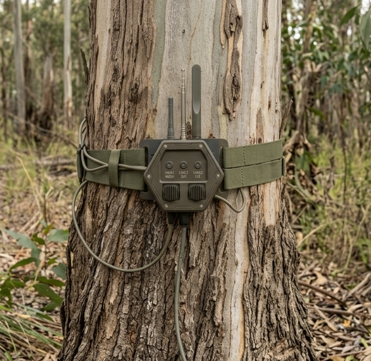

Innovation
Research that ends up in the field.
This is where our research and development lives, from active experiments to systems already in operators' hands, and how each one has matured along the way.
We invest in the problems others park as too hard, and we run our own R&D to work them out. Some of what you see here is still in the lab; some has been trialled, hardened and fielded. What ties it together is a way of working: prove the difficult part first, test it against the real environment, then keep developing it until it holds up where it matters. That is how an idea becomes something people can rely on.
The ecosystem
SENTIA is the ecosystem our solutions sit within.
It is the connective tissue that turns those separate outputs into one trusted picture. SENTIA senses, links and interprets across sources, then hands the decision-maker a clear recommendation with the reasoning and evidence behind it, so they can trust it or overrule it. Sensing, SWIFT and the rest all plug in here.
Hover, tap or use the arrow keys to explore each stage and the Anywise products behind it.
The commander sets how much the system does. AI does what people cannot at scale, then shows its reasoning. High-risk decisions always stay with people.
Our other innovations
Sensing & vision Fielded · TRL 5
Eyes and ears where power and comms run out
The places that matter most are often the ones you can't watch: no power, no network, no easy access. We field small, low-cost sensors you can deploy in numbers and leave in place, turning those blind spots into a live picture you can act on. Each configuration is built around the problem, not the other way round.
For: anyone who needs to know what's happening somewhere they can't reach, power, or connect.

SWIFT Validated · TRL 3, advancing to 4
Getting the message through when the network is denied
When bearers are jammed, intercepted or degraded, the message still has to arrive. SWIFT splits each message across several bearers at once, so no single one carries the whole thing, and reassembles it at the far end. Lose a bearer and the message still completes. Intercept one and an adversary gets a meaningless fragment. And it runs on the radios you already operate.
Split across bearers, not duplicated. Lose one, it still gets through.
Short bursts, fragmented traffic, reroutes before a bearer fails.
Sits on your existing tactical radios.
Delivery you can prove: did it arrive, and intact?
For: defence and emergency teams who can't assume the network will be there.

Assured Connectivity Active R&D
Data that reaches where nothing else can
Some environments defeat conventional communications entirely: too contested, too remote, too much in the way. We're engineering prototypes that use every available slice of spectrum and heal their own networks around lost nodes, pushing data through obstacles and keeping it moving when everything else drops out. This is where we're pushing the edge next.
Not tied to one bearer or band. Whatever gets the data through.
Reroute around lost nodes automatically. No single point of failure.
For: operations in places where "no signal" isn't an acceptable answer.

Have a problem that looks too hard? That's usually where we start.